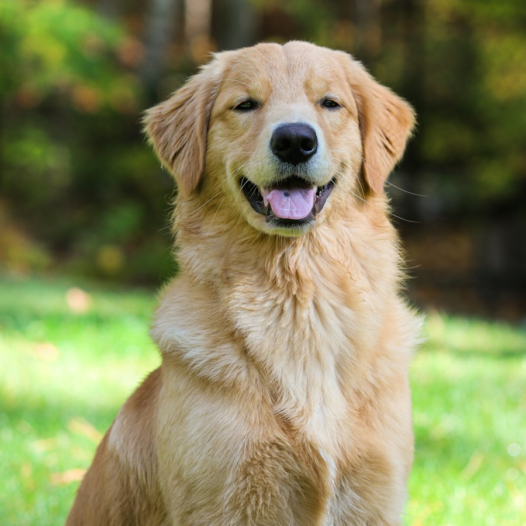

Untuk hari biasa
Gejala masih ringan, pertanyaan makan, perilaku, vaksin, atau saat Anda ingin pendapat kedua sebelum ke klinik.
Tanya dokter hewan lewat chat atau video. Untuk kucing, anjing, burung, kelinci, hamster, reptil, dan hewan kesayangan lain.



Dokter hewan lewat chat atau video, dari rumah. Ceritakan kondisinya, lalu ikuti arahan yang bisa langsung dilakukan.
Gejala masih ringan, pertanyaan makan, perilaku, vaksin, atau saat Anda ingin pendapat kedua sebelum ke klinik.
Kucing, anjing, burung, kelinci, hamster, reptil, ikan, kuda, hewan ternak, dan hewan kesayangan lain.
Dokter memandu langkah awal yang aman: tenangkan hewan, rawat luka ringan, dan siapkan yang perlu dibawa ke klinik.
Kejang, sulit bernapas, keracunan, atau tidak sadar tidak menunggu chat. Bawa hewan ke klinik terdekat sekarang.
Pilih ikon hewan. Keluhan yang sesuai baru muncul setelah itu.
Dokter untuk kucing, anjing, burung, kelinci, hewan kecil, reptil, dan hewan kesayangan lain.
Sp.KH · Spesialis Kucing
5 tahun pengalaman
Mulai dariRp 75.000
Sp.KH · Anjing & Kucing
7 tahun pengalaman
Mulai dariRp 100.000
Sp.KH · Penyakit Dalam
7 tahun pengalaman
Mulai dariRp 85.000
Sp.KH · Gigi & Mulut
6 tahun pengalaman
Mulai dariRp 90.000
Sp.KH · Mata & Telinga
8 tahun pengalaman
Mulai dariRp 95.000
Sp.KH · Spesialis Anjing
4 tahun pengalaman
Mulai dariRp 80.000
Sp.KH · Burung & Unggas
6 tahun pengalaman
Mulai dariRp 90.000
Sp.KH · Kelinci & Hewan Kecil
5 tahun pengalaman
Mulai dariRp 85.000
Sp.KH · Reptil & Eksotik
7 tahun pengalaman
Mulai dariRp 110.000
Cara kerja
Pilih dokter, ceritakan kondisi hewan, bayar, lalu lanjut chat atau video.
Kenapa SobatPaws
Dokter terverifikasi, jadwal yang bisa dilihat, dan riwayat yang tersimpan.
Pemilik hewan di seluruh Indonesia sudah memakai SobatPaws.

“Dokternya sangat sabar dan menjelaskan dengan detail. Mochi jadi lebih baik setelah konsultasi. Terima kasih SobatPaws!”
“Konsultasi lewat video call sangat membantu. Dokter menjelaskan dengan jelas dan Bruno cepat kembali aktif.”

“Prosesnya cepat, dokternya ramah, dan saran-sarannya sangat berguna. Sekarang Luna sudah lebih aktif lagi!”

“Saya konsultasi soal nafsu makan Kopi tengah malam. Dokternya responsif dan menu barunya langsung cocok.”
“Vaksin Milo tinggal dijadwalkan ulang setelah chat. Tidak perlu antre, rekam medisnya juga rapi.”
“Oreo cemas kalau ditinggal. Saran latihannya praktis dan bisa saya ikuti tiap hari.”
Aman. Dokter di SobatPaws terverifikasi dan memiliki STR. Percakapan serta data hewan hanya terlihat oleh Anda dan dokter yang menangani.
Transfer bank, kartu debit/kredit, QRIS, serta e-wallet seperti GoPay, OVO, dan DANA.
Sesi chat berlangsung hingga 30 menit dan sesi video sekitar 20 menit. Keduanya bisa diperpanjang bila dokter masih membutuhkan informasi.
Bisa, termasuk jika jenisnya berbeda, misalnya kucing dan burung. Setiap hewan punya sesi sendiri supaya diagnosis tetap akurat.
Konsultasi online tidak untuk kondisi darurat. Jika hewan kejang, sulit bernapas, keracunan, atau tidak sadar, segera bawa ke klinik terdekat.
Bisa dibatalkan paling lambat 1 jam sebelum jadwal. Dana kembali ke metode pembayaran semula dalam 1–3 hari kerja.
Konsultasi sekarang dan dapatkan saran terbaik untuk hewan kesayangan Anda.
Perawatan mandi, potong kuku, pembersihan telinga, dan styling untuk kucing, anjing, kelinci, dan hewan kecil. Bisa dipadukan dengan catatan dokter setelah konsultasi.
Penitipan harian dan menginap dengan kamar berpendingin, jadwal makan sesuai catatan, serta laporan foto dua kali sehari.
Pemeriksaan langsung, vaksin, laboratorium, dan tindakan lanjutan. Hasil konsultasi online bisa dibawa sebagai rujukan.
SobatPaws menghubungkan pemilik hewan dengan dokter hewan terverifikasi lewat chat dan video, lalu merujuk ke klinik bila hewan perlu diperiksa langsung.
Kami membuka kesempatan untuk dokter hewan, perawat, dan tim layanan. Kirim profil ke karir@sobatpaws.example.
Artikel perawatan, nutrisi, dan tanda bahaya untuk kucing, anjing, burung, kelinci, reptil, dan hewan kesayangan lain akan tayang di blog SobatPaws. Halaman ini masih pratinjau.
Konsultasi online tersedia setiap hari, pukul 07.00–23.00 WIB. Klinik mitra buka pukul 08.00–20.00 WIB.
Layanan ini adalah konsultasi awal dan tidak menggantikan pemeriksaan fisik. Pengguna wajib memberi informasi yang jujur tentang kondisi hewan. Pembatalan mengikuti ketentuan di halaman FAQ.
Nama pemilik, data hewan, dan isi konsultasi hanya dipakai untuk layanan SobatPaws. Data tidak dijual. Pada pratinjau ini, formulir tidak mengirim data ke server.